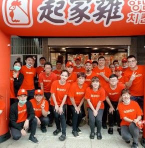

CHEOGAJIP GLOBAL
세계로 뻗어가는
처갓집의 맛
한국의 맛을 세계 곳곳에서 만나보세요.
OUR GLOBAL STORY
한국에서 시작된 맛,
세계와 함께하는 이야기
처갓집양념치킨의 고유한 맛과 정성을 세계 고객에게 전합니다. 각 지역의 문화와 입맛을 존중하며, 현지 파트너와 함께 새로운 이야기를 만들어갑니다.
해외매장 둘러보기 ↓
GLOBAL STORE
해외매장 안내
국가를 선택해 해외 매장 정보를 확인해 보세요.
※ 국가 및 매장 카드는 페이지 구성 확인용 샘플입니다. 실제 해외 운영 국가·매장 주소·연락처 데이터로 교체 후 정식 안내에 사용할 수 있습니다.